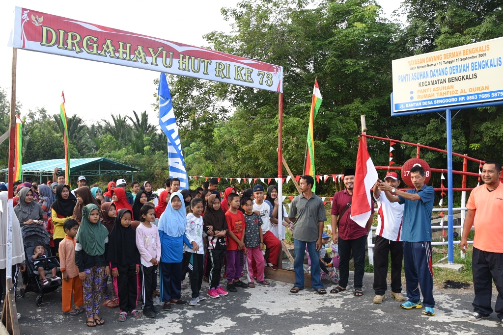
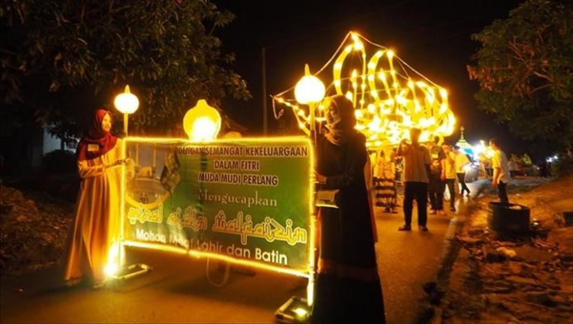
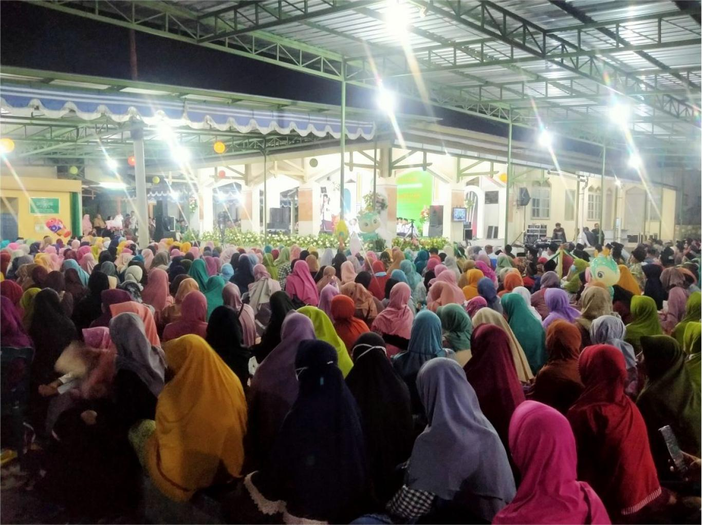
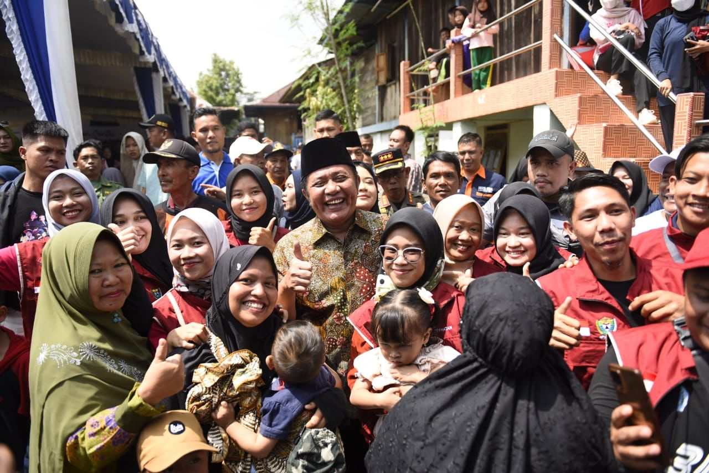
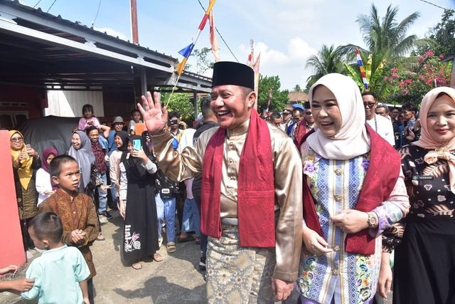

Trash-P: Mudahnya Bayar Sampah Bulanan Secara Online
Selamat datang di Trash-P solusi modern untuk membayar sampah bulanan dengan mudah dan cepat. Dengan website ini, Anda bisa melakukan pembayaran secara online tanpa ribet. Nikmati kenyamanan bayar tagihan sampah dari mana saja, kapan saja.
Kegiatan Wilayah

KEGIATAN JALAN SEHAT 17 AGUSTUS 1945

KEGIATAN TAKBIR KELILING

KEGIATAN PENGAJIAN


About Us
Trash-P Adalah website untuk membantu Masyarakat membayar tagihan sampah setiap bulannya dengan mudah. Trash-P adalah webiste yang diciptakan oleh sekelompok mahasiswa Jurusan Sistem Informasi Universitas Pembangunan Nasional Veteran Jawa Timur. Dengan Trash-P ini diharapkan bisa memudahkan Masyarakat di Dusun Buncitan, Kabupaten Sidoarjo.